This tutorial explains how to use advanced features of Sirius:
The instructions will guide you extending the basic modeling tool that is the result of the Sirius Starter Tutorial. This starting modeling tool just allows you to create diagrams which represent Men and Women linked by parental relationships. From this diagram you can also use the palette to create Men. The advanced modeling workbench created with this new tutorial will complete the diagrams with many edition and visualization tools and new kinds of representations.
These instructions are based on the same simple Domain Model which describes basic concepts about families.
The modeling workbench created with this tutorial will allow users to visualize the members of a family and their parental relationships on a graphical diagram. It will also provide tools to edit the model from the diagram.
Before starting the tutorial have a look to the installation procedure.
At any moment during the tutorial, to see the differences between your working on version and the expected one you can do a git diff. For example, when you are on the initial_state you can do:
git diff creation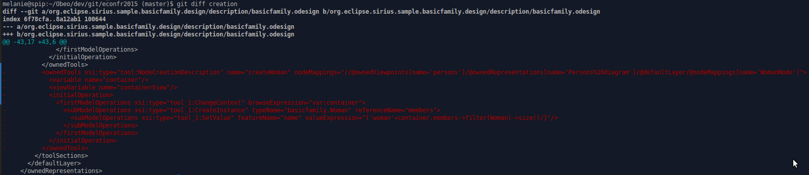
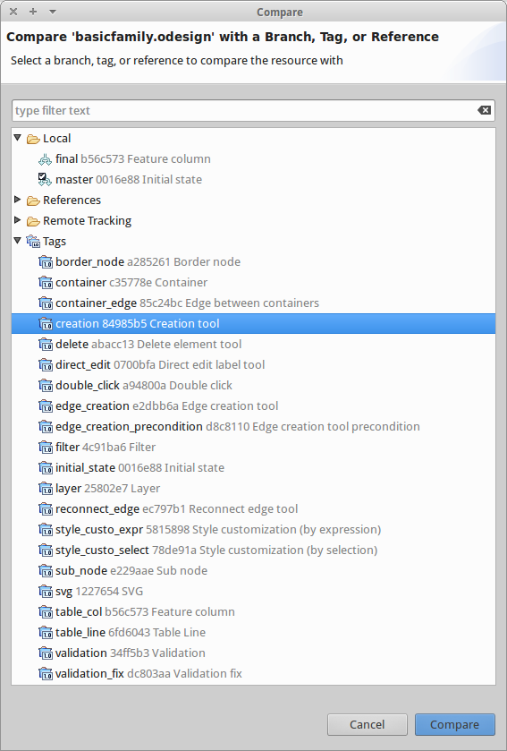
The EMF Compare view opens showing the differences:
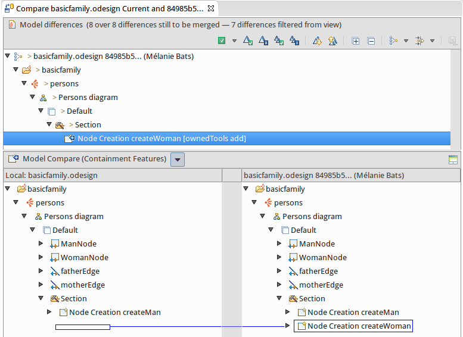
If you want to skip some steps, you can get directly the result of a step thanks to: git reset --hard xxx. For example, when you are on the initial_state you can go directly to the result of the Creation step:
git reset --hard creationorg.eclipse.sirius.sample.basicfamily.design from the Model Explorer and right click to select Team > Reset > Tags. Select a tag and in the reset type the Hard radio button: 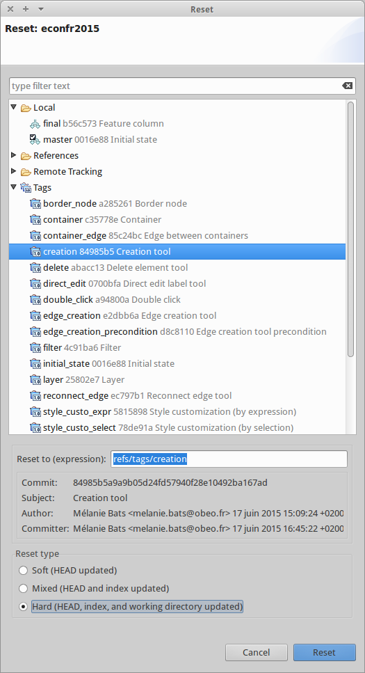
If you have a look to the odesign file, it is updated with the expected changes.
The first step of this tutorial consists in completing the basic modeler with a tool to create Women also.
Copy and paste the tool CreateMan, then replace Man by Woman:
name (under the Create instance)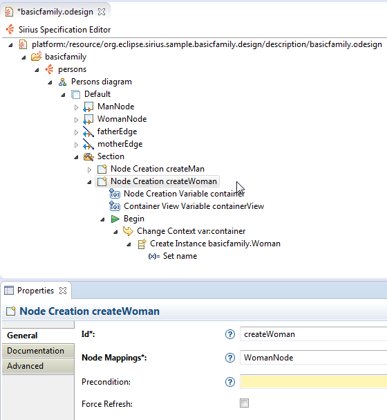
To see the result, have a look on the tag : creation
An Edge Creation tool allows the user to create relationships directly from the diagram, by using the palette.
Let’s use this tool to allow the user to set the father and the mother of a Person.
Right click on the Section and select the menu 'New Element Creation > Edge Creation'
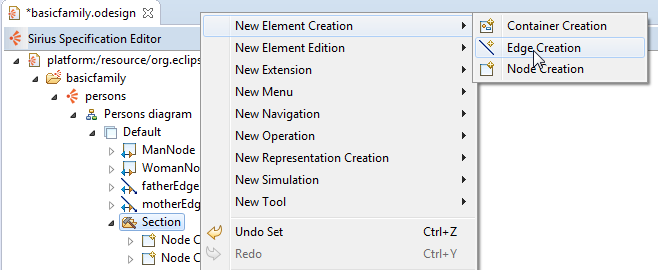
Give an Id to this tool (setFather) and associate it to fatherEdge, the Edge Mapping which defines the father graphical relation.
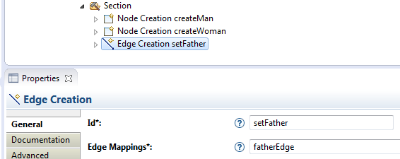
Then define the operations that will be performed by this tool each time the user will click on it. These operations can use four variables that are automatically set by Sirius:
Under the Begin object, create a Change Context and set its Browse Expression to var:source in order to define the execution context of the next operations.
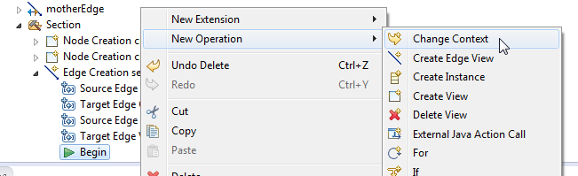
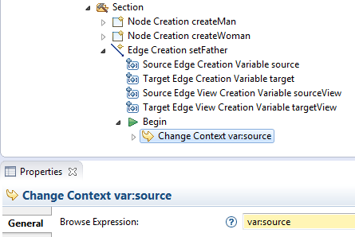
Under the Change Context create a Set which will set the father of the first Person clicked (source) to the second Person clicked (target):
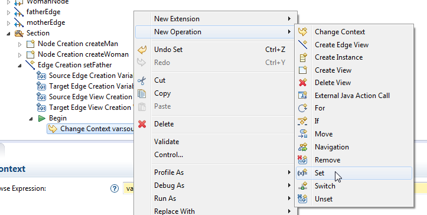

Save the odesign file and you will see a new tool setFather in the palette.
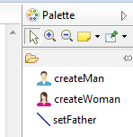
To see the result, have a look on the tag : edge_creation
To prevent the user to create a father relationship from a person to itself, or to one of its children, you can add a precondition expression (written in Acceleo 3).
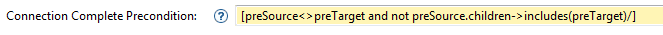
This expression uses to new variables:
With this precondition, the tool will prevent the creation of forbidden links by showing a specific icon.
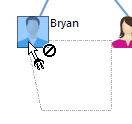
Then copy, paste and update this tool to create the setMother tool.
To see the result, have a look on the tag : edge_creation_precondition
A Reconnect Edge tool allows the user to change the end of a relationship by moving it directly from the diagram.
Let’s create a Reconnect Edge tool to change the father and the mother of a Person.
Right click on the Section and select the menu New Element Edition > Reconnect Edge
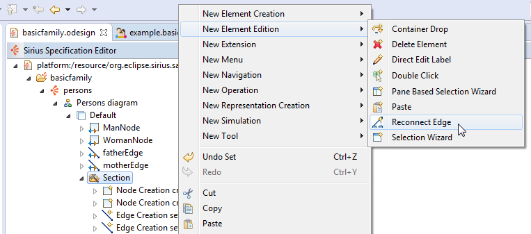
Associate the fatherEdge to this reconnect tool.
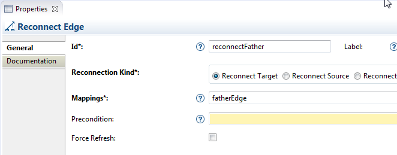
This tool comes with six variables:
Then create a Change Context and set its expression to var:element (the person who will change his father)
Finally, create a Set to assign the new selected parent (var:target) as father of this person.
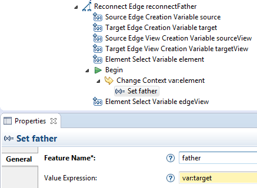
Copy, paste and update this tool to create a reconnect tool for mother relationship.
A Reconnect Edge tool allows the user to change the end of a relationship by moving it directly from the diagram.
Let’s create a reconnect edge tool to change the father and the mother of a person.
Right click on the Section and select the menu New Element Edition > Reconnect Edge
Associate the fatherEdge to this reconnect tool.
This tool comes with six variables:
Then create a Change Context and set its expression to var:element (the person who will change his father)
Finally, create a Set to assign the new selected parent (var:target) as father of this person.
Copy, paste and update this tool to create a reconnect tool for mother relationship.
To see the result, have a look on the tag : reconnect_edge
A Delete Element tool specifies which actions have to be performed when the user hits the delete key on an diagram element.
It is necessary on elements which deletion can’t be interpreted by Sirius (for example edges) or if you need to perform specific actions.
Let’s create a Delete Element tool to specify what to do when the user deletes a paretal relation.
Right click on the Section and select the menu 'New Element Edition > Delete Element'

Associate the fatherEdge to this Delete tool.
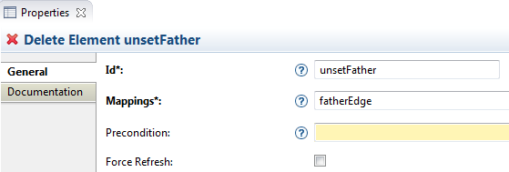
When deleting an edge, the variable element refers to the source of the relationship.
So, create a Change Context and set its expression to var:element (the person which is the children). Then create a Unset on the feature father to remove this relation.

Copy, paste and update this tool to create a delete tool for mother relationship.
To see the result, have a look on the tag : delete
A Direct Edit Label specifies how to interpret the modification of graphical object’s label in order to modify the model.
Let’s create a Direct Edit Label to change the name of a Person directly from the diagram.
Right click on the Section and select the menu 'New Element Edition > Direct Edit Label'
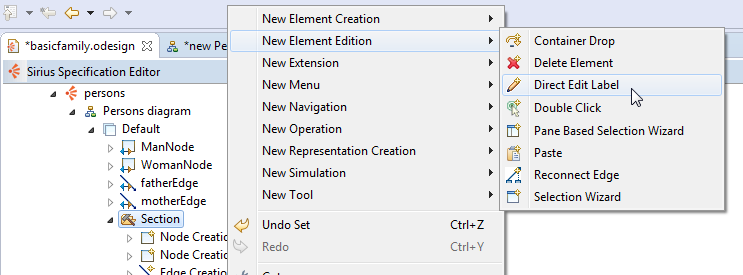
Associate this tool to the objects which have a name: ManNode and WomanNode
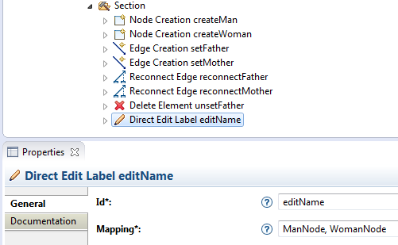
This tool comes with a mask that creates variables depending on the label’s value. By default, the mask is set to {0}, which means that the variable named 0 will contain the full value of the label.
Create a Set to indicate the feature of the edited object that will be modified (name) and the value to assign (var:0).
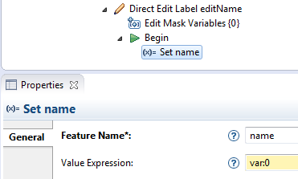
To see the result, have a look on the tag : direct_edit
Sirius supports SVG images to improve the quality of the diagrams.
Because the current designer uses PNG images, resizing a Man or Woman on a diagram causes the pixelation of images.
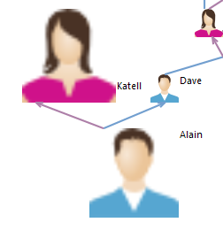
There is man.svg and woman.svg in the icons folder.
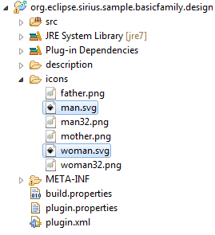
In the Workspace Path property of the Workspace Images associated to ManNode and WomanNode, replace the PNG images by these SVG images.
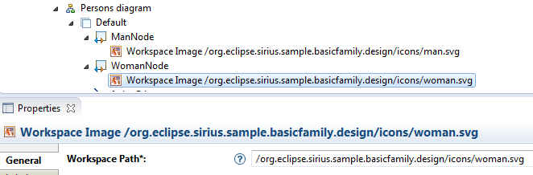
Finally, set a predefined size to adapt the SVG image to the same size than the 32x32 PNG image (here enter 4).
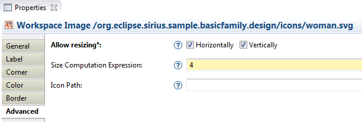
Close and re-open the diagram to allow Sirius to take the modification into account: now the images are no more pixelated.
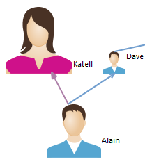
To see the result, have a look on the tag : svg
Style Customizations change graphical properties of diagram elements (color, label, size, ...) depending on conditions.
For example, let’s change the label of a Person depending on the number of its children:
Right click on the Default Layer and select the menu New Customization > Style Customizations. It will group all the different customizations.
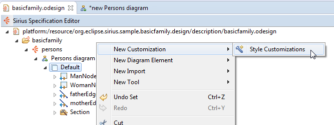
Right click on the Style Customizations and select the menu New Customization > Style Customization to create the first customization.
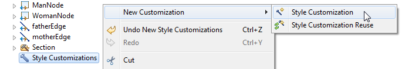
Enter the Acceleo3 expression associated to this customization: [children->size()=0/]
Then define the graphical properties that will change if the condition is met.
Right click on the Style Customization and select the menu New Customization. To change the label color, create a Property Customization (by selection).
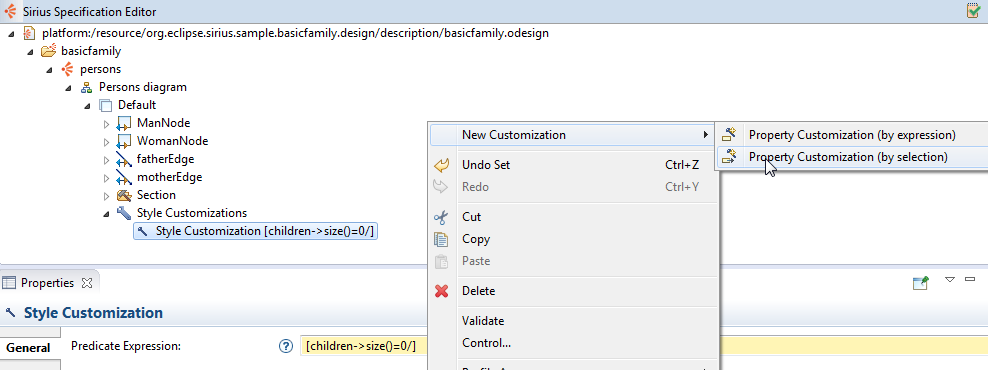
On this Property Customization, select the two Workspace Images for the Applied On field (they hold the label to change), enter labelColor in the Property Name field, then select the gray color.
Note that you can use the automatic-completion to select the applicable property.
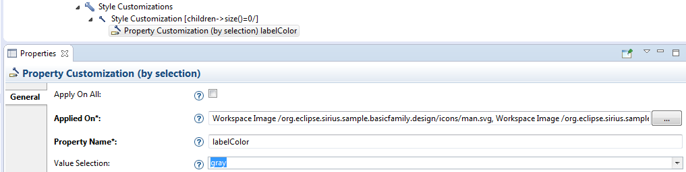
To see the result, have a look on the tag : style_custo_select
Create a second Style Customizations with the condition:[children->size()>1/]
and add a Style Customization (by expression) to set the labelSize to 12.
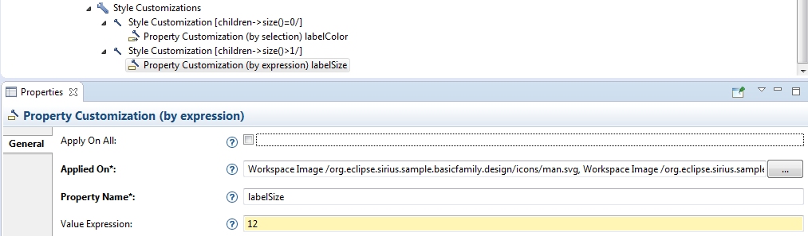
Finally, create a third Style Customizations with the condition:[children.children->size()>0/]
Add a Style Customization (by expression) for the Workspace Image corresponding to the Man, enter the property name labelExpression and the expression ['Grandpa '+name/] (to prefix the person name with Grandpa).
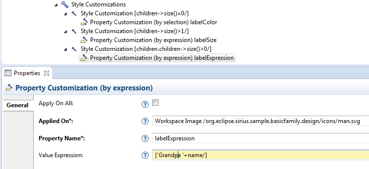
Do the same with the Woman image and the expression ['Grandma '+name/].
Save the odesign file and see the result on the diagram.
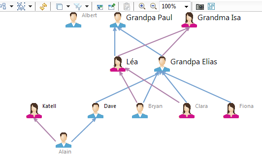
To see the result, have a look on the tag : style_custo_expr
With Sirius it is possible to allocate specific graphical elements to layers that can be activated/deactivated on demand by the user.
Let’s create two layers: one for the Men and one for the Women.
Right click on Persons diagram and select the menu New Diagram Element > Additional Layer.
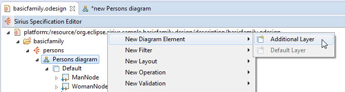
Call this Layer Men and check the option Active by default.
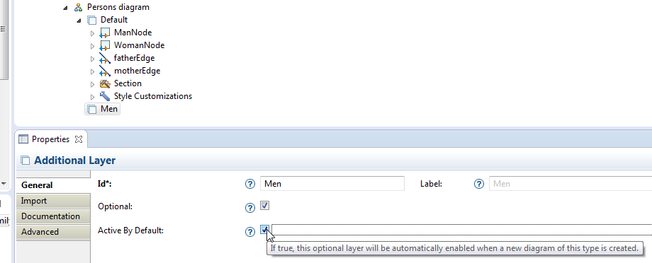
Create a Section in this layer then drag and drop all the elements related to the Man type into this layer.
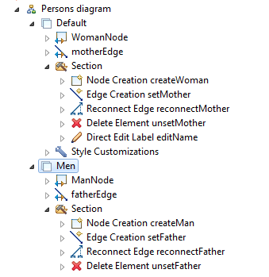
Create a second Layer Women and drag and drop all the elements related to the Woman type.
Re-open the sample diagram. You can see the two optional layers Men and Women (selected by default).
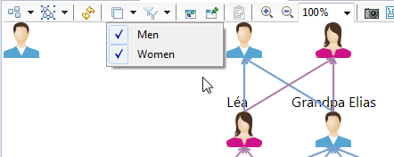
If you de-activate the Men layer, only women remain on the diagram. Note that the tools related to men have been hidden too.
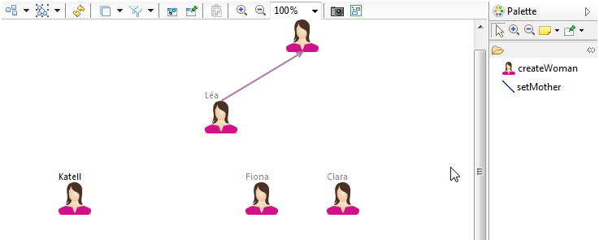
To see the result, have a look on the tag : layer
With Filters, Sirius provides an additional mechanism to automatically show or hide elements of a diagram: a condition determines which elements remain visible.
Let’s create a Filter to hide Persons without children.
Right click on Persons diagram and select the menu New Filter > Composite Filter.
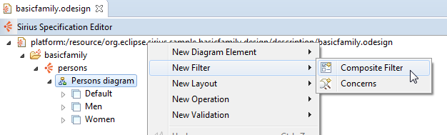
Set the id to childrenFilter.
Then create a Mapping Filter.
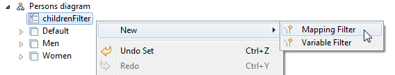
Associate ManNode and WomanNode to this filter and define the Semantic Condition Expression : [children->size()>0/]
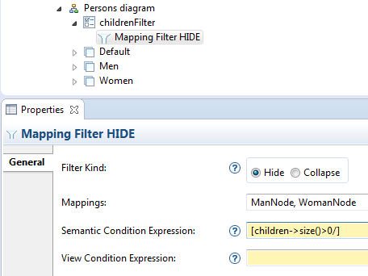
On the diagram, you can now select the filter childrenFilter and see that only persons with children remain visible.
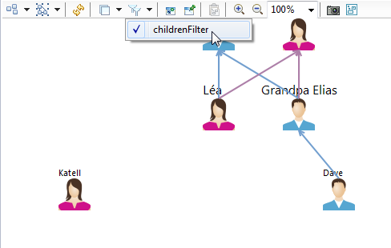
To see the result, have a look on the tag : filter
Validation rules allow the user to evaluate the quality of a model.
For example, despite the precondition we have created on the edge creation tool, users can still create circular parental relations between two persons by using the Properties View.
Let’s create a Validation Rule to detect this problem.
Right click on Persons diagram and select the menu New Validation > Validation.
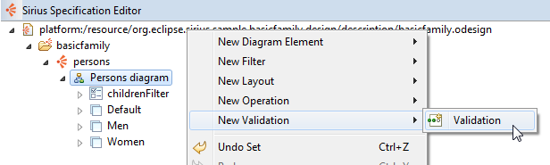
Set the name ‹FamilyValidation› to this Validation. Then create a Semantic Validation Rule.
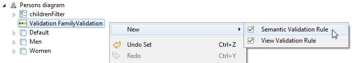
Set the properties of this rule:
Errorbasicfamily.Person['Children of '+name+' should not include his father ('+father.name+')'/]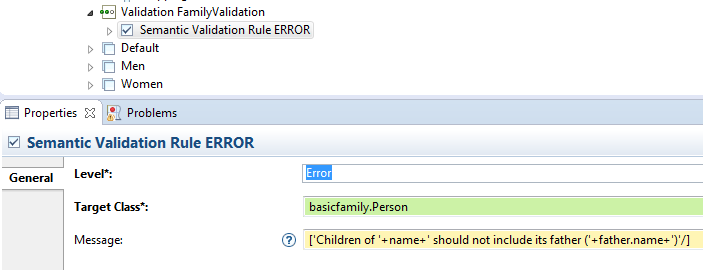
Then create an Audit (a condition corresponding to this rule) with the expression [not children->includes(father)/].
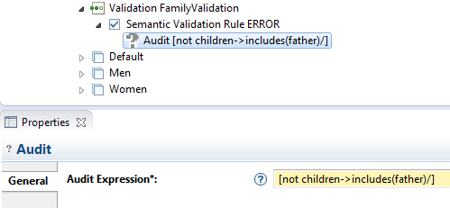
To test this rule, introduce an error in the model with the Property View: set the father of a Man to its son.
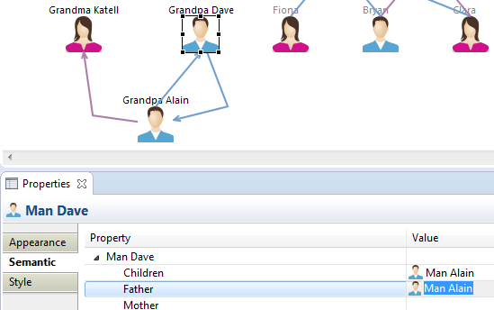
Then right-click on the diagram and select the menu Validate diagram.
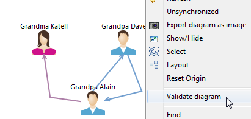
The circular father relationship is detected and a decorator (corresponding to the rule level) is displayed on the persons with this problem. A tootip contains the error message.
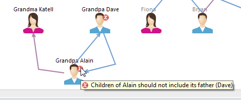
To see the result, have a look on the tag : validation
Fixes can be provided to the user for solving the problem automatically.
For example, we can propose to unset one of the two father relations.
Right-click on the Rule and select the menu ‹New > Fix›.
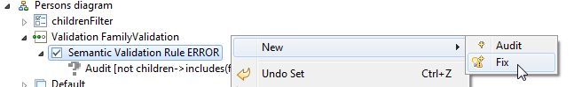
Set the name Unset father to this Fix and create a Begin. Then create a Unset and enter father in the Feature name.
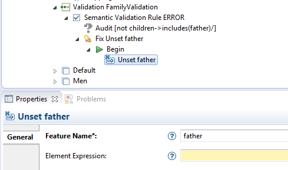
If you open the Problems View, you can right-click on one of the errors and select the menu Quick Fix.
A dialog opens which proposes the available fixes.
Select Unset father and click on Finish: the father of the selected person is automatically unset and the problem is solved.

To see the result, have a look on the tag : validation_fix
The Persons diagram is a representation related to the whole model: it displays all the members of the family. This is the reason why it belongs to the Family instance, as you can see in the Model Explorer.
With Sirius, you can create a representation on any instance of the model. For example, let’s create a person-centered diagram to show only the relationships of a given person.
Right-click on the persons viewpoint and select the menu ‹New Representation > Diagram Description›.
Set these properties to this representation:
Relationships diagrambasicfamily.Person
In the Advanced tab, set the Title Expression to ['Relations of '+name/] in order to customize the name of the diagram with the person’s name.
Add a Default Layer to this diagram and save the odesign file. Now, you can right click on a person in the Model Explorer and create a new representation of type Relationships diagram.
The result is a blank diagram, since we have not yet specified its content.
A Container is a kind of diagram element that can contain other diagram elements.
On the Relationships diagram, let’s use two containers to represent:
Right-click on the Layer and select the menu ‹New Diagram Element > Container›.
For this first container, set these properties:
Person Containerbasicfamily.Personvar:self (the current person)ListTo define the graphical rendering of this container, right-click on it and select the menu ‹New Style > Gradient›.
On this style, set these properties:
12boldlight_greenSave the odesign file and you see a green container appear on the diagram that you have created for a person.
To see the result, have a look on the tag : container
Now, to display children inside this container, right-click on the container definition and click on the menu ‹New Diagram Element > Sub Node›.
On the Sub Node set these properties:
ChildrenNodebasicfamily.Personfeature:childrenThen create a style. Note that the kind of style is not important here: for elements in a list, the style is used only to specify the label.
Save the odesign file, and now you can see the children listed inside the container.
To see the result, have a look on the tag : sub_node
Copy paste PersonContainer to create the container for siblings.
Change these properties on this new container description:
SiblingsContainer10Siblingslight_yellowAnd these properties on the Sub Node:
Sibling Node[parents.children->excluding(self)/]Save the odesign file, and now you can see the siblings listed inside a second container.
Now let’s add Border Nodes to the first container to display the parents of the current person.
Right-click on PersonContainer and select the menu ‹New Diagram Element > Border Node›:
Set these properties to the border node:
ParentNodebasicfamily.Personfeature:parentsAdd a Square as style, and set these properties:
NodewhiteSave the odesign file, and now you can see the parents attached on the border of the first container:
To see the result, have a look on the tag : border_node
Like nodes, Containers can be linked with Edges.
Right-click on the Default container and select the menu ‹New Diagram Element > Relation Based Edge›.
Set these properties to the edge:
SiblingsEdgePersonContainerSiblingsContainervar:self (the second container represents the current person also)On the style of the edge (automatically created), you can specify the end’s decorators.
Save the odesign file, and now you can see a link between the two containers.
To see the result, have a look on the tag : container_edge
Now we can create a specific diagram for each person. To facilitate the navigation between all these diagrams, let’s create a Double Click tool that allows the user to navigate from any person on a diagram to its dedicated diagram.
Go back to the first diagram, right click on the Section in the first Layer and select the menu ‹New Element Edition > Double Click›.
On the Mappings property of the Double Click select all the elements of the modeling tool that represent a Person (except the two containers, since it doesn’t make sense to navigate to the current diagram).
To specify the action of the Double Click, right-click on the Begin and select the menu ‹New Operation > Navigation›.
Then set these properties to the Navigation :
Relationships diagramtrueSave the odesign file, close and reopen your diagrams. Now you can double-click on persons to open their corresponding Relationships diagram. If this diagram has not been created yet, Sirius will propose to create it.

To see the result, have a look on the tag : double_click
With Sirius it is also possible to represent model elements with a Table.
Let’s create a table that lists all the persons, with this information for each:
Right-click on the Viewpoint and select the menu New representation > Edition Table Description.
Set these properties to the table:
Persons tablebasicfamily.FamilyIn this table, you need lines to represent the persons. So, right-click on the Table and select the menu ‹New Table Element > Line›.
Set these properties to the line:
PersonLinebasicfamily.Personfeature:nameSave the odesign file then right-click on the Family instance in the Model Rrowser and click on the menu 'New Representation. You can see a new menu ‹new Persons table›.
If you select this menu, Sirius creates and opens a table with all the family’s members.
To see the result, have a look on the tag : table
Now, let’s add columns to this table to display more information for each person. So, right-click on the Table and select the menu ‹New Table Element > Feature Column›.
Set these properties to the column:
fatherColfatherSelect the Label tab and set these properties:
Father[if father.oclIsUndefined() then '' else father.name endif/]Copy and paste ‹fatherCol› then rename father by mother in all the properties.
Save the odesign file and see the two new columns.
Finally, add a new Feature Column to display the number of children.
Set these properties to the column:
childrenColchildrenSelect the Label tab and set these properties:
Children[children->size()/]Save the odesign file and see the third column.
To see the result, have a look on the tag : table_col
When Acceleo 3 expressions become complex, you should write Java Services instead.
For example, let’s create a Java Service to compute the number of cousins and display this information in the table.
Open the Java Class named FamilyServices in your Viewpoint Specification Project (which contains the odesign file). Have a look to the method named getCousinsNumber.
You can use the code below to complete this class:
package org.eclipse.sirius.sample.basicfamily.design;import java.util.ArrayList;
import java.util.List;import org.eclipse.sirius.sample.basicfamily.Person;
public class FamilyServices {
public int getCousinsNumber(Person person) {
List<Person> cousins=new ArrayList<Person>();
List<Person> parents=person.getParents();for (Person parent: parents) {
for (Person grandParent: parent.getParents()) {
for (Person uncleOrAunt: grandParent.getChildren()) {
if (!parents.contains(uncleOrAunt)) {
for (Person cousin:uncleOrAunt.getChildren()) {
if (!cousins.contains(cousin))
cousins.add(cousin);
}
}
}
}
}
return cousins.size();
}
}
To be able to use the Java methods as Services, the class must be declared in the odesign file.
Right-click on the Viewpoint then select the menu New Extension > Java Extension.
Then, set the Qualified Class Name property to org.eclipse.sirius.sample.basicfamily.services.FamilyServices.
To use the service getCousinsNumber in the table, create a new Feature Column named cousinsCol and invoke the service in the expression (service:getCousinsNumber).
With Sirius 2.0, Java services can’t be tested from the same runtime: you need to launch a new runtime.
Create and launch a new Run Configuration of type Eclipse Application and set the arguments -XX:MaxPermSize=256m.
In the new runtime, import the basicfamily.sample project and create a diagram and a table on Family.
In this table, you can see a new column Cousins containing the number of cousins for each person (0). Use the diagram to create more persons such as some of them have cousins: Sirius will automatically update the number of cousins in the table.